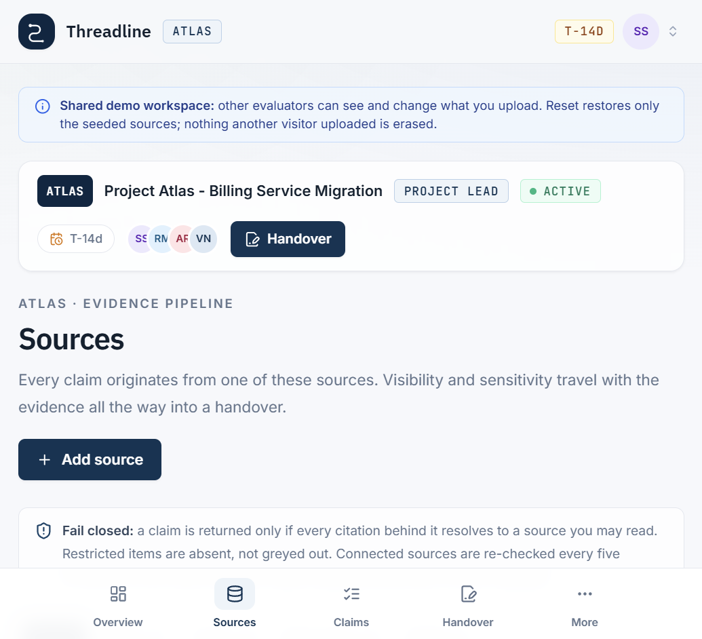
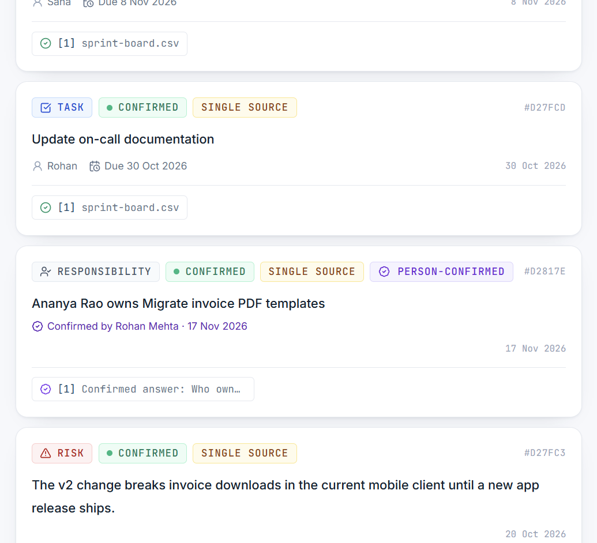
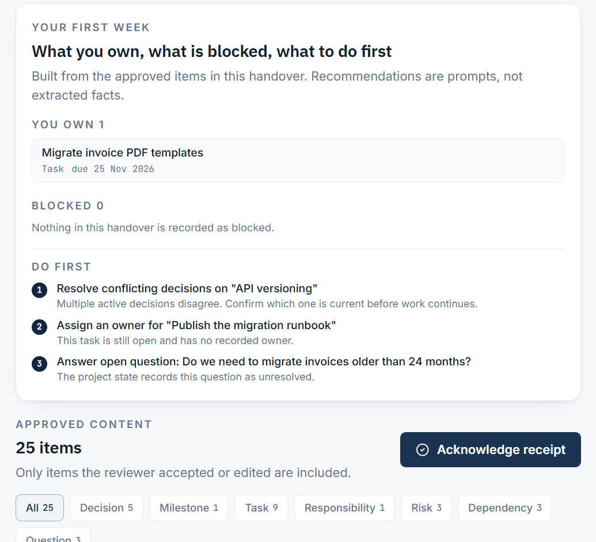

THREADLINE / ROUND 3 FINAL REPORT
ROUND 3 | FINAL REPORT
THREADLINE
From a working handover to one you can prove.
ROUND 3 RESULT
All three improvements named in the Round 2 report are implemented in this submission tree: an
access-rule canary matrix, connected-source freshness with outdated-handover diffs, and
person-confirmed clarifications. The local suite is 124 tests across 17 suites, zero failures;
29/29 rules-extracted and 35/35 Gemini-extracted quotes matched their source verbatim.
The hosted demo and public repository still reflect the last push (15 November 2026); the Round 3 tree is not yet pushed.
SUBMISSION DETAILS
| Field | Details |
|---|
| Competition | CodePuneThinkers Hackathon – Hack With Pune |
| Round | Round 3 – final submission |
| Team name | ZeusConquers |
| Institution | National Institute of Technology, Rourkela |
| Team size | 1 member |
| Submitting participant | Subham Sahu (Team Lead) |
| Submission date | 17 November 2026 |
| Register / archive | CodePuneThinkers |
The round in one minute
Round 1 set the rule: important information must link to its source, restricted information must stay hidden,
and a person must approve a handover before it is shared. Round 2 built that loop. Round 3 had to prove it:
test the access boundary against every viewer, keep the facts current when sources change, and capture what
was never written down. This report shows each promise, the code behind it, the evidence it produces, and
the result — including the parts that remain unproven.
What the demo proves
- Source proof: every extracted item can be checked against a verbatim quote at recorded character offsets.
- Permission proof: five planted canaries never cross a boundary across seven viewer contexts, before or after access changes.
- Human control: no handover reaches a recipient until a project lead approves it and a recipient-bound link is used.
Where it stands today
| Entry point | Current submission |
|---|
| Live product | threadline-snowy.vercel.app — hosted build (Round 2 behaviour until Round 3 is pushed) |
| Source repository | github.com/subhamsahu-25/Threadline — public repository; Round 3 tree is local in this submission |
| Final product PDF | This document — Threadline-Round-3-Final-Report.pdf |
| Runtime | React on Vercel; Express on Render free tier (cold starts are surfaced); MongoDB Atlas |
| Demo workspace | ATLAS — 4 people, 6 sources, 28 claims, 1 superseded decision, 1 conflict set, 2 ownership gaps |
THREADLINE / ROUND 3 FINAL REPORT
01 / THE THREE COMMITMENTS
What Round 3 had to prove
Round 2 named three improvements and five success measures. This round had to deliver them in code, prove
them with tests, and keep the rest of the product working. The tables below show each promise and its result.
| Named in the Round 2 report | Delivered in this tree | Result |
|---|
| 1. Test access rules for every user type across project details, warnings, suggested actions and handovers; any leak fails the build; report how often quotes match. |
Five canary strings across seven viewer contexts and every API surface, including handovers as author, lead and recipient. CI workflow. Quote-accuracy report. |
Pass, locally 3 matrix tests green; 29/29 and 35/35 quotes exact. No red CI run captured (branch unpushed). |
| 2. Keep connected sources current. Check GitHub and Drive, process only new or changed files, mark approved handovers outdated and show the changes. |
Per-source refresh (default 5 minutes), checksum skip, outdated-handover detection with a field-level diff for author and recipient, mocked Drive path. |
Pass, in tests 7 sync tests green. No live five-minute observation; token limitations stated. |
| 3. Ask departing members about missing details. At least one ATLAS answer, person-confirmed, approved through the existing review path. |
Clarification candidates for gaps, conflicts and open questions; addressee-only answer or decline; person-confirmed evidence labelled with name and date. |
Pass, end to end One ATLAS ownership gap answered, shared with the project, accepted and approved. |
The five success measures
| Measure | Target set in Round 2 | Observed in this submission |
|---|
| Access leaks | Zero restricted items, quotes, counts or labels shown to the wrong person. | Zero canary crossings in three matrix scenarios. Counts and labels are asserted too. |
| Source accuracy | At least 90% of claims verified against a source quote. | 100% exact: 29/29 with the rules extractor, 35/35 with Gemini; 0 normalized, 0 failed. |
| Update speed | A change updates the overview within one refresh cycle; five-minute target. | Interval, checksum and outdated-handover behaviour proven by tests. No live connector run is claimed. |
| Knowledge capture | At least one missing detail answered and approved. | One ownership gap closed by a person-confirmed answer; recipient sees the label, person and date. |
| Reliability | Zero test failures, existing and new. | 124/124 pass across 17 suites on 18 Nov 2026; frontend build and 6-check smoke pass. |
Read this like a judge
Every result above names the test or document that produced it. Nothing is projected: all Round 3 evidence is
from the local stack because the tree has not been pushed. Sections 05 and 06 open the evidence.
THREADLINE / ROUND 3 FINAL REPORT
02 / THE COMPLETE PRODUCT · 1 OF 2
Sources, extraction and reconstruction
This is the full inventory of the submission tree, grouped by stage. Working means exercised by a
test or a browser journey; Partial means present with a stated limit.
| Area | Feature | Status | Evidence |
|---|
| Sources | Upload PDF, DOCX, Markdown, TXT, CSV and JSON; 15 MB per file, 20 files per batch | Working | ingest/parsers |
| Sources | Checksum de-duplication, revision history and offset-preserving chunks | Working | ingest/index.js |
| Sources | Re-ingest keeps claim IDs, owners, statuses and resolutions; failures keep prior content; concurrent re-ingest returns 409 | Working | ingest-hardening.test.js |
| Connectors | GitHub: README, issues, pull requests and commits, with a repository allow-list | Working* | ingest/github.js |
| Connectors | Google Drive folder listing | Partial | Token paste, no OAuth |
| Connectors | Per-source refresh interval (1–1440 min, default 5) with checksum skip | Working* | ingest/sync.js |
| Connectors | Approved handovers flip to outdated with added, updated and removed lines | Working | handover/workflow.js |
| Extraction | Gemini structured extraction with automatic fallback on 404, 429 and 503 | Working* | ai/gemini.js |
| Extraction | Deterministic labelled-line extractor when no model is configured | Working | ai/heuristic.js |
| Extraction | Verbatim quote validation (exact, normalized, failed) with character offsets | Working | ai/validate.js |
| Extraction | Eight claim types: decision, task, risk, dependency, question, milestone, responsibility, next action | Working | ai/schema.js |
| Extraction | Confidence labels plus low-confidence, injection-like and truncation flags | Working | ingest-hardening |
| Privacy | Pattern redaction of emails, phones, keys and tokens, credentials, private keys and 12-digit IDs before review or sharing | Working | redaction.test.js |
| Evidence | Person-confirmed answers stored as their own evidence type, separate from document quotes | Working | clarifications.test.js |
| Reconstruct | Overview with project stage, readiness score, item counts and disagreements | Working | reconstruction/* |
| Reconstruct | Gap detection: missing owners, unverified evidence, stale items, unanswered questions | Working | reconstruction/state.js |
| Reconstruct | Supersession by topic key and explicit replacement phrases | Working | reconstruction.test.js |
| Reconstruct | In-place conflict resolution; superseded statements are excluded from every future draft | Working | conflict-resolution |
| Reconstruct | Actionable next actions: assign an owner, answer a question, record a mitigation, close a task | Working | claim-actions.test.js |
* The code path and tests exist; GitHub and Gemini require the corresponding server-side credential. No live connector or model run is claimed unless stated.
THREADLINE / ROUND 3 FINAL REPORT
02 / THE COMPLETE PRODUCT · 2 OF 2
Review, sharing, identity and quality
Once evidence exists, the product has to turn it into a handover a lead is willing to sign, then hand it to one
named person — and tell four different people what their job is.
| Area | Feature | Status | Evidence |
|---|
| Handover | Recipient-specific draft; an item is included only when every citation is readable | Working | handover/compose.js |
| Handover | Withheld content reported as counts by reason only: permissions, template or unverified | Working | handover/compose.js |
| Handover | Three templates: onboarding, executive and audit | Working | handover/templates.js |
| Review | Accept, edit or reject each item with a note; pending-item guard before submit | Working | handover-workflow |
| Review | Lead-only approval, with an optional second-approver rule (maker-checker) | Working | round3-hardening |
| Versions | Workflow transitions each snapshot an immutable version with a readable field-level diff | Working | handover/workflow.js |
| Sharing | Recipient-bound link; SHA-256 hash; 7-day expiry; revocation; rotation needs confirmation | Working | handover/share.js |
| Sharing | Read-time re-check; revoked items disappear; the notice never discloses a withheld number | Working | permission-recheck.js |
| Clarify | Ask one or all gaps with de-duplication; only the addressee can answer or decline; answers are redacted | Working | clarifications.test.js |
| Recipient | First-week view: what you own, what is blocked, what to do first | Working | RecipientHandover.jsx |
| Recipient | Acknowledgement snapshot taken when the recipient confirms receipt | Working | round3-hardening |
| Identity | JWT authentication (12-hour expiry), bcrypt hashes, logout token revocation | Working | middleware/auth.js |
| Identity | Roles: lead, contributor and observer, with membership administration | Working | membership.test.js |
| Access | Source scopes: project, roles or users; fail-closed for unknown scopes and soft-deleted sources | Working | access/policy.js |
| Audit | Actor, action, target, IP and user agent; unreadable targets redacted; leads only | Working | permission-matrix |
| Demo | One-click profiles, in-app persona switcher, shared-workspace notice and scoped rebuild | Working | demo-seed.test.js |
| Interface | Cold-start notice on load and again after inactivity | Working | AppShell.jsx |
| Interface | Responsive at 1440×900 and 390×844; landmarks, one h1, skip link, labelled controls | Working | TESTING_NOTES §3–4 |
| Quality | 17 test suites / 124 tests, CI workflow and quote-accuracy evaluation | Working | ci.yml |
* The code path and tests exist; GitHub and Gemini require a server-side credential. No live connector or model run is claimed unless stated.
Not built, and not claimed
SSO/SCIM · hard erasure and retention policy · PII classifier for names and addresses ·
semantic / vector retrieval · semantic conflict detection · outbound notifications · per-user OAuth and
webhooks · durable queue and object storage · component, end-to-end and load tests.
Each is costed in section 08. None is described anywhere as present.
THREADLINE / ROUND 3 FINAL REPORT
03 / ARCHITECTURE AND INFORMATION FLOW
Three parts, one permission boundary
The browser is static; the API owns every decision; MongoDB stores the record. No database credential,
connector token or other person's session ever reaches the browser.
Browser
React 18 SPA
Vercel staticNo permission logicRenders API output
→HTTPS
Bearer JWT
API
Express 4 · Node 20+
Role guardAccess policyIngest queueCompose
→TLS
Mongoose
Data
MongoDB Atlas
SourcesEvidenceHandoversAudit
01
Ingest
Parse, checksum, keep a revision, chunk with absolute offsets.
→
02
Extract
Gemini or rules; every item must quote the source.
→
03
Reconstruct
Supersession, conflicts, gaps, readiness, next actions.
→
04
Compose
Recipient-specific draft; readable citations; withheld counts only.
→
05
Review & share
Accept, edit or reject; lead approval; hashed link; acknowledgement.
Untrusted edges: browser input, uploads, and connector or model responses — each validated or quote-checked before it can influence a claim.
| Area | Technology | What it does |
|---|
| Frontend | React 18.3, React Router 6.28, Vite 6.4, Tailwind 3.4, lucide-react | Screens for projects, sources, overview, claims, review, questions, people, audit and shared links |
| API | Node 20+, Express 4.21, Zod, Mongoose 8 | Authentication, uploads, pipeline orchestration, composition, workflow and audit |
| Database | MongoDB Atlas; in-memory MongoDB for tests and local demos | Projects, sources, documents, claims, evidence, clarifications, handovers, versions and audit events |
| Sign-in | JWT with 12-hour expiry, bcryptjs, project role guard | Identity, role checks and logout revocation |
| Extraction & parsing | Gemini 3.8 Flash with 3.5 Flash-Lite fallback; rules fallback; unpdf, mammoth, custom TXT / MD / CSV / JSON | Structured claims with quotes validated against the source; text with absolute offsets and truncation flags |
| Connectors & queue | GitHub REST; Drive REST with a pasted token; in-process workers, INGEST_CONCURRENCY=2, one retry; one-minute scheduler | Read-only import with allow-lists; ingestion jobs, startup recovery and five-minute default refresh |
| Hosting / CI | Vercel, Render free tier, GitHub Actions | SPA rewrites, API hosting, 17 suites plus frontend build and smoke on each push |
Deliberate trade-offs: full-corpus extraction keeps exact offsets; composition-time filtering makes revocation immediate; an in-process queue favours demo simplicity over crash durability; pattern redaction is explainable but narrower than a PII classifier.
THREADLINE / ROUND 3 FINAL REPORT
04 / PERMISSIONS
No evidence without permission
Visibility is evaluated on sources, and claims inherit the strictest constraint. The default is
denial: an unknown scope hides the source rather than exposing it.
Six rules, evaluated in order
- No source, a soft-deleted source, or a non-member → hidden.
- A person-confirmed source → visible to the answering member and project leads only.
- scope: project → any project member.
- scope: roles → only the listed roles (lead, contributor, observer).
- scope: users → only the listed people.
- Unknown or missing scope → hidden. Fail closed.
Surfaces that must agree
| Surface | Filter |
|---|
| Project stats | Counts only readable sources and claims; total equals visible total. |
| State, claims, sources, documents | Visible rows only; list totals equal the number of readable rows. |
| Source, document, evidence detail | 403 or 404 when the item is not visible; the response carries no title or quote. |
| Handover composition | An item is included only when every citation resolves to a readable source. |
| Handover list and detail | Recipient-only viewers see no counts of any kind; author and lead views are filtered too. |
| Shared link | Recipient-bound session plus a read-time re-check; no reviewer notes, alerts or first-week leakage. |
| Audit log | Events targeting unreadable sources are redacted to Restricted item with no id or metadata. |
| Clarifications | Candidates only for claims the departing member can read; only the addressee can answer or decline. |
Read-time re-check
A share link does not freeze the item list. Every recipient open recomputes visibility; removed items are dropped
and the event is audited. The payload says that content changed — never how many items or which sources,
because a count can itself leak.
The canary matrix in section 05 attacks every row above for seven viewer contexts.
THREADLINE / ROUND 3 FINAL REPORT
05 / WHAT CHANGED AFTER ROUND 2 · 1 OF 3
Access rules, tested against every viewer
Round 2 promised automated proof that each user type can reach only what they are allowed to see — across
project details, warnings, suggested actions and handovers — with a single leak failing the build. This is
that promise, and how it was kept.
Promise
Test every user type across project details, warnings, suggested actions and complete handovers. Any leak
fails the build. The final report shows how often source quotes match.
Implementation
Five unique canaries planted in source names, document titles, statements and quotes. Seven viewer contexts.
Every content, handover, shared-link and audit surface. Three states: baseline, role revoked, conflict resolved.
Proof
permission-matrix.test.js (3 tests) · ci.yml on push and pull request ·
eval:quotes · QUOTE_ACCURACY.md · observer screenshot.
Result
3/3 green locally; no canary crossed a boundary. Quote accuracy 29/29 and 35/35 exact, 0 failed.
No red CI run was captured, because the branch was not pushed during this build.
Five canaries, five ways to leak
| String planted | Restriction type | Must stay invisible to |
|---|
| LEADONLY-7731 | Source scoped to the lead role | Everyone except the lead |
| RECIPIENT-4472 | Source scoped to the recipient's user allow-list | Everyone except that recipient |
| ROLE-EXCLUDED-3350 | Source scoped to lead and contributor roles | Observer |
| DELETED-6621 | Soft-deleted project source | Everyone |
| CONFIDENTIAL-9184 | Confidential source, lead-only by sensitivity | Every non-lead |
leadsecond leadcontributor
observerrecipientoutgoing member
non-member
Quote accuracy, the other half of commitment 1: 29/29 rules-extracted and 35/35 Gemini-extracted
claims matched their source verbatim; 0 normalized, 0 failed. The full table is in section 06.
What counts as a leak
Content, a quote, a title, a source name, a count or a label. A viewer only sees counts of rows they can already
read. When a recipient's items disappear after a permission change, the notice says content changed and does not
disclose how many items were withheld.
THREADLINE / ROUND 3 FINAL REPORT
05 / WHAT CHANGED AFTER ROUND 2 · 2 OF 3
Handovers that notice when the project moves
A handover is a snapshot. The promise was that Threadline would check connected sources, process only what
changed, and mark an approved handover outdated — with the changes shown, not just a warning.
Promise
Automatically check GitHub and Drive. Process only new or changed files. Mark approved handovers outdated
and show users what changed.
Implementation
A sync record per connector source: enabled, 1–1440 minute interval, last
checked, last changed, last error and checksum. A one-minute scheduler enqueues due sources.
Proof
source-sync.test.js (7 tests): interval and forced checks, checksum skip,
outdated diff for author and recipient, mocked Drive path, failure retention, settings validation,
order-independent fingerprints.
Result
7/7 green. Claim IDs, owners and statuses survive re-ingestion. A changed source flips an approved
handover to outdated with added, updated and removed lines. No live connector observation is claimed.
What the recipient sees
An Outdated banner, a permitted diff built only from sources they may read, and an offer to regenerate.
Regenerating creates a new draft and invalidates the old share link; it does not silently rewrite the old one.

Sources screen: the fail-closed rule is stated in the interface. The seeded workspace is
upload-only, so no sync control is rendered — uploads are manual, connectors are polled.
docs/screens/round3-sources-sync-scope.png
What is not claimed
No live five-minute refresh was observed. The environment has no outbound GitHub or Drive access and no
tokens, and the seed is upload-only. Drive uses a pasted token, not OAuth. Webhooks are not built.
THREADLINE / ROUND 3 FINAL REPORT
05 / WHAT CHANGED AFTER ROUND 2 · 3 OF 3
Knowledge that was never written down
Some of the most important project knowledge lives in a person, not a document. The promise was to ask the
departing member about missing owners, conflicting decisions and open questions — and to keep their answer
clearly labelled as a human confirmation.
Promise
Ask the departing member about gaps, conflicts and open questions. Save the answer with their name and
date, marked as person-confirmed rather than document-extracted.
Implementation
Candidate gating by what that member can read. Ask one or all gaps with de-duplication. Only the addressee
can answer or decline. An answer creates a confirmation source, a document, evidence and a claim.
Proof
clarifications.test.js (7 tests) covers candidate gating, ask-all, addressee-only
access, refusal for unreadable items, the person-confirmed claim, the recipient label and redaction.
Result
One ATLAS ownership gap closed end to end: asked, answered, shared with the project, accepted and approved.
The recipient sees PERSON-CONFIRMED, the person and the date.
The recorded ATLAS path
- As Subham, ask Rohan: “Who owns Migrate invoice PDF templates after Rohan Mehta leaves?”
- As Rohan, answer “Ananya Rao”; only Rohan can submit or decline this answer.
- As Subham, choose Share with project, then accept the item in a handover and approve it.
- As Ananya, open the share link: the item is labelled PERSON-CONFIRMED with Rohan's name and 17 Nov 2026.
- The ownership gap disappears from the overview and the underlying claim is a confirmation source, not a quote.

Recipient view: the responsibility is labelled PERSON-CONFIRMED, attributed to Rohan Mehta on
17 Nov 2026, and cites the confirmed answer.
docs/screens/round3-recipient-person-confirmed.png
Why it is not a model answer
Person-confirmed evidence is typed separately from a document quote. It is excluded from the quote-accuracy
rate by design, length-capped, treated as text, redacted before sharing, and visible only to the answering
member and project leads.
Ten further fixes, not counted as one of the three
Redaction and certainty labels; the cold-start notice; in-place conflict resolution; actionable next actions;
permission-filtered author and lead views; re-ingestion safety; reconstruction corrections; share and approval
hardening; the first-week view; and the accessibility pass. Each is mapped to its files and commits in
docs/IMPROVEMENTS.md; none is counted towards the three commitments.
THREADLINE / ROUND 3 FINAL REPORT
06 / TESTING · 1 OF 2
124 tests, seventeen suites, zero failures
Each suite boots its own in-memory MongoDB, so no external service is needed and no test depends on the shared
demo workspace. Full run on 18 November 2026: 17 suites, 124 tests, 0 failures, 101.79 seconds.
| Suite | Tests | What it proves |
|---|
| permission-matrix | 3 | Seven viewer contexts across every content, handover, share and audit surface; five canaries before and after revocation and conflict resolution. |
| round3-hardening | 12 | Recipient status refresh, purge, freshness, hashed tokens, revocation, maker-checker, acceptance notes, acknowledgement, logout, scoped views, diffs. |
| source-sync | 7 | Interval scheduling, forced checks, checksum skip, outdated diffs, mocked Drive path, failure retention, settings validation. |
| clarifications | 7 | Askable gaps, ask-all de-duplication, addressee-only answers, refusal for unreadable items, person-confirmed label, redaction. |
| claim-actions | 10 | Owner assignment, done tasks, question answers, mitigations, closure notes, observer rejection, validation and 404 guards. |
| conflict-resolution | 6 | Lead confirms the current decision, the rest are superseded, the conflict clears, drafts exclude superseded, audit, role rejection. |
| handover-permissions | 10 | Recipient withholding, hidden-until-shared, live re-check after visibility changes, template exclusions, review limits. |
| handover-workflow | 7 | Edit, submit, approve, share and acknowledge; version history and audit; pending-item and transition guards; share rotation; public demo link read and acknowledged without signing in, refused elsewhere. |
| ingest-hardening | 11 | Confidence and injection flags, truncation, re-ingest preservation, extraction counts, 409, allow-lists, failed-ingest retention. |
| reconstruction | 11 | Blocked status, undated items, null readiness, phase, blockers, fuzzy conflicts, identical restatements, critical actions. |
| extraction | 9 | Verbatim quote location (exact, normalized, failed), heuristic extraction, CSV normalization. |
| redaction | 4 | Emails, phones, credentials and 12-digit IDs; no double redaction; ordinary text untouched; compose-time redaction. |
| api-ingestion | 3 | Auth, upload → ingestion → claims → evidence preview, role isolation, unsupported files, audit trail. |
| demo-seed | 7 | Public seed only when the workspace is missing; scoped reset requires the lead; stale membership repaired without losing content; startup reconciliation. |
| membership | 4 | Adding an existing account, refusing unknown or duplicate additions, role changes, removal that ends access, owner protection. |
| notifications | 10 | Notices routed by role and event, one per recipient and event, removed when access ends, read state per user, payload limited to a title, detail, project key and link. |
| llm-fallback | 3 | Gemini retry on a retired model (404), 429 and 503. |
CI, stated precisely
.github/workflows/ci.yml runs backend npm ci && npm test and frontend
npm ci && npm run build && npm run smoke on every push and pull request, on Node 20.
The workflow exists in this tree; it has not been triggered for Round 3 because the branch has not been pushed.
THREADLINE / ROUND 3 FINAL REPORT
06 / TESTING · 2 OF 2
The oracles, the gate and failure behaviour
Quote accuracy is measured; the gate and eleven browser journeys are real; failure paths were exercised.
Quote accuracy
| Extraction | Claims | Exact | Normalized | Failed |
|---|
| Deterministic rules (ATLAS + messy fixture) | 29 | 29 | 0 | 0 |
| Gemini (gemini-3.8-flash) | 35 | 35 | 0 | 0 |
Frontend gate
| Check | Observed |
|---|
| Production build | 4.27 s · 1,609 modules |
| JavaScript bundle | 476.41 kB · 128.11 kB gzip |
| CSS bundle | 49.13 kB · 9.09 kB gzip |
| Smoke check | 6 of 6 pass: mount, title, CSS, JS and every referenced asset |
What this does not prove
No component-test suite, no end-to-end automation in CI, no load or concurrency run beyond demo scale, no
live GitHub or Drive refresh, and no automated accessibility score. Each is costed in section 08.
When something fails
| Failure | Observed result |
|---|
| Unsupported or oversized upload | Rejected with a specific error code; nothing ingested. |
| Model unavailable (404, 429, 503) or no key | Fallback model retried; without a key the rules extractor runs and labels its output. |
| Repository missing, not allow-listed, or Drive unconfigured | Typed 404, 403 or 501 in the interface; no partial import. |
| Connector sync fails | Previous knowledge kept, sync.lastError recorded, source stays ready. |
| Re-ingest while processing | 409; no duplicate claims. A failed re-ingest keeps previous content. |
| Share link opened by the wrong person or after expiry | Access denied; links are recipient-bound and expire after SHARE_TTL_DAYS. |
| Restricted citation on an otherwise visible claim | The whole claim is withheld — partial visibility counts as no visibility. |
| Quote cannot be matched in the source | Marked unverified and excluded from handovers until a reviewer resolves it. |
| Clarification addressed to anyone else | Refused with 400 or 403; only the addressee can answer or decline. |
| Backend cold start on Render free tier | Slow first request (about 60 s) succeeds; the UI warns and repeats after inactivity. |
THREADLINE / ROUND 3 FINAL REPORT
07 / USABILITY
A product four different people can use
The demo is built around four roles because the permission model is the product. Each person has a job on screen,
not a settings page, and switching between them re-evaluates every view live.
| Person | Role | What they do on screen |
|---|
| Subham Sahu | Lead | Create and approve handovers, restrict sources, resolve conflicts, read the audit log. |
| Rohan Mehta | Contributor | The departing member: answers clarifications about gaps, conflicts and open questions. |
| Ananya Rao | Contributor | The incoming recipient: opens a share link, reads evidence, sees a first week, acknowledges. |
| Vikram Nair | Observer | Read-only; confirms that restricted sources, claims and counts stay hidden. |
Accessibility, measured
| Check | Result |
|---|
| Interactive elements audited across four screens | 134 (login 4, overview 49, review 46, recipient 35) |
| Controls without an accessible name | 0 |
| Form fields without a label / images without alt | 0 / 0 |
| Positive tabindex values / focusable in aria-hidden | 0 / 0 |
| Landmarks and page heading | main = 1 and a visible h1 on every screen |
| Text contrast | ink.muted 5.52:1; ink.faint 4.93:1 on white |
Method: an in-page DOM audit plus a WCAG contrast calculation. axe and Lighthouse could not be installed, so no automated accessibility score is claimed.

Recipient first week: what you own, what is blocked and what to do first, above the approved
content and the acknowledgement control.
docs/screens/round3-recipient-first-week.png
The unassisted gap, stated plainly
No unassisted usability session has been run. The evidence is eleven scripted journeys, a DOM accessibility audit
and screenshots — all produced by the builder. The shared demo workspace is a second constraint: another evaluator
can change the seeded data. The next step is five unassisted sessions with the 90-second walkthrough, recording
time to first handover, points of hesitation and any error that requires help.
THREADLINE / ROUND 3 FINAL REPORT
08 / LIMITS AND ROADMAP
What it does not do, and what comes next
The limits are known and costed; the roadmap is ordered by the risk each phase removes. Nothing is claimed as built.
Status at the time of writing
The Round 3 tree is on branch main and has not been pushed. The live URL and the public
repository still serve the Round 2 build; every Round 3 test, screenshot and metric here is from the local stack.
Current limits
| Limit | What it means | Documented in |
|---|
| Redaction is pattern-based | Catches emails, phones, keys, credentials and 12-digit IDs; not reliable for names, addresses or salaries. | README |
| The demo workspace is shared | Another evaluator can change the seeded Atlas data; rebuild restores only seeded sources. | README |
| The queue is in-process | Jobs are lost on a hard restart; startup recovery only re-queues sources stuck over 10 minutes. | ARCHITECTURE |
| Rules-only mode reads labelled lines | Without Gemini, free-form prose yields nothing; explicit prefixes, CSV rows and checkboxes are required. | README |
| Connectors use a server-wide credential | No per-user OAuth consent; GitHub and Drive tokens are shared by every project. | README |
| Tests stop at build, smoke and journeys | No component suite, no end-to-end automation in CI, no load or concurrency run, no live connector run. | TESTING_NOTES |
Roadmap, in risk order
| Phase | Scope | Effort | Risk |
|---|
| 1. Survive a restart | Durable queue (BullMQ + Redis or a Mongo worker), object storage for uploads, startup self-check in /api/health. | 2–3 days | Medium |
| 2. First-class connectors | Drive OAuth consent, GitHub and Drive webhooks, per-user credentials, connector health and allow-list state. | 5–7 days | High |
| 3. Privacy and identity | SSO and SCIM, retention and hard erasure, PII classifier with a review queue, signed audit export. | 6–8 days | High |
| 4. Recall and reasoning | Vector retrieval, semantic conflict detection, notification delivery, reviewer assignment and SLA reminders. | 6–10 days | High |
| 5. Evaluation depth | Component and accessibility tests, load and concurrency testing, a labelled extraction-quality benchmark. | Ongoing | Medium |
19–28 working days for Phases 1–4, single developer, including tests and documentation. Phase 5 runs alongside. Each phase removes a named limit above.
THREADLINE / ROUND 3 FINAL REPORT
09 / REPRODUCING THIS RESULT
Run it, test it, check it
The backend starts with an ephemeral in-memory MongoDB and no external services, so the full loop is reproduced
from a clean clone. The final links are on the cover: live product, public repository and this PDF.
Quick start
# Terminal 1 — API on :4000, in-memory MongoDB
cd backend && npm install && npm run dev
# Terminal 2 — UI on :5173
cd frontend && npm install && npm run dev
# Seed the ATLAS workspace (only when missing)
curl -X POST "http://localhost:4000/api/demo/seed"
Verification
# 17 suites, 124 tests
cd backend && npm test
# 29/29 rules + 35/35 Gemini
npm run eval:quotes
# Build + 6-check smoke
cd ../frontend
npm run build && npm run smoke
Demo profiles: Subham Sahu (lead), Rohan Mehta (contributor, departing), Ananya Rao (recipient), Vikram Nair (observer). One click signs in a seeded profile; Threadline#2026 is for local demo accounts only.
The 90-second walkthrough
- Pick Subham Sahu, open Project Atlas → Handovers, and create a handover for Ananya with the onboarding template.
- Accept, edit or reject a few items, submit it, approve it as Subham and share it.
- Switch to Ananya, open the share link, read an evidence preview, see the first week and acknowledge.
- Switch back to Subham, restrict handover-notes.txt to the lead role, reload Ananya's view: the items disappear and the change is audited.
Configuration and deployment
MONGODB_URI (empty starts in-memory; production uses Atlas), JWT_SECRET
(required in production), GEMINI_API_KEY (otherwise rules extraction), CORS_ORIGINS
(required in production) and optional connector tokens. Frontend on Vercel with SPA rewrites; API on Render free
tier, where the first request after inactivity can take about a minute and the UI says so. backend/.env
is gitignored; .env.example holds placeholders only.
Evidence index: README, TESTING_NOTES, QUOTE_ACCURACY, SYNC_EVIDENCE, CLARIFICATION_FLOW, ARCHITECTURE, IMPROVEMENTS, ROADMAP, AI_DISCLOSURE, permission-matrix.test.js and ci.yml. After submission: push this tree, redeploy, capture the first green CI run, run five unassisted usability sessions, then start Phase 1.
THREADLINE / ROUND 3 FINAL REPORT
10 / SCORING AND ROLE
Eighty-five out of one hundred, self-assessed
| Category | Evidence a judge can open | Self |
|---|
Completeness
25 points | 38 features across ingestion, extraction, reconstruction, handover, identity and audit; the full loop runs in the browser. Partial: Drive OAuth, notifications, pattern redaction. | 21 |
Three improvements
20 points | Canary matrix, quote report and CI workflow; sync with outdated diffs; clarifications end to end. Missing: a live connector run and a red CI run. | 18 |
Reliability
20 points | 124 tests across 17 suites; failure retention; 409 guards; fail-closed policy; quote validation. Residual: in-process queue, no load test. | 17 |
Usability
20 points | Four personas, one-click entry, first-week view, cold-start notice, accessibility audit. Missing: an unassisted usability session. | 15 |
Documentation / roadmap
15 points | README, architecture, testing notes, quote report, sync and clarification evidence, improvements map, AI disclosure and a five-phase roadmap. | 14 |
| Total self-assessment — 100 points; the judges' number is their own. | 85 |
What I built, in my own words
Role: Backend, frontend and permissions — solo developer, with Qoder (Claude) as the AI pair-programming tool.
Built: the fail-closed access policy and five-canary permission matrix; ingestion and extraction with verbatim quote validation; connected-source sync with outdated handovers; person-confirmed clarifications; the React review, recipient and shared-link flows; and 124 tests across 17 suites.
I wrote Threadline end to end. The permission boundary is the part I was most careful about: the browser never
decides what a person may see, and the API never returns a row, count or label the viewer could not already read.
Round 3 also had to keep the record honest — quotes checked against invented text, freshness against silent
staleness, clarifications labelled as a person's answer. The limits that remain are in section 08.
AI use, stated plainly
Qoder (Claude) was the pair-programming tool; Gemini and ChatGPT helped draft documentation; Google Stitch was an
early visual reference. All code was reviewed, run and tested. Runtime Gemini is extraction-only, quote-checked.
Full disclosure: docs/AI_DISCLOSURE.md.
Nothing should reach the recipient unless it can be traced to an original source that the recipient may read
— and a project lead has approved the handover.
Subham Sahu · Team ZeusConquers · CodePuneThinkers Hackathon – Hack With Pune · 17 November 2026